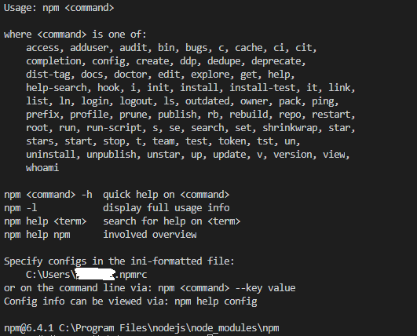

我们要明白我们使用的npm就是node中自带的包(模块)管理工具：借助NPM可以帮助我们快速安和管理依赖包，使Node与第三方模块之间形成了一个良好的生态系统。
我们可以直接输入npm，查看帮助引导：

我们也可以去查看文档：
官方文档：https://www.npmjs.com
中文文档：https://www.npmjs.com.cn
1. 我们要使用第三方模块就要先安装：
//局部安装
npm install 模块名
//全局安装
npm install 模块名 -g2.可以查看安装好模块的目录
//局部查看
npm root 模块名
//全局查看
npm root 模块名 -g 3.可以查看安装好的模块属性
//查看某个包对于各种包的关系
npm view 模块名 dependencies4.可以查看安装好模块的地址
npm view 模块名 repository.url5.可以查看当前项目模板的版本号
npm view 模块名 version6.可以查看模块的所有信息
npm view 模块名7.卸载模块
npm uninstall 模块名8.检验模块是否存在
npm search 模块名9.清除npm缓存
npm cache clean10.查看当前安装好的模块
npm list解决npm被墙的问题
http://npm.taobao.org/ 淘宝的开发团队把 npm 在国内做了一个备份。
方案一：
安装淘宝的cnpm
# 在任意目录执行都可以
# --global 表示安装到全局，而非当前目录
# --global 不能省略，否则不管用
npm install --global cnpm
npm install jquery --registry=https://registry.npm.taobao.org方案三(推荐)：
但是每一次手动这样加参数很麻烦，所我们可以把这个选项加入配置文件中：
# 配置到淘宝服务器
npm config set registry https://registry.npm.taobao.org
# 查看 npm 配置信息
npm config list